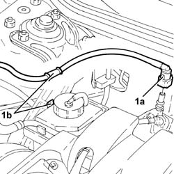
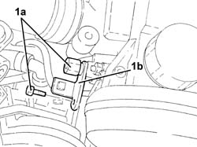
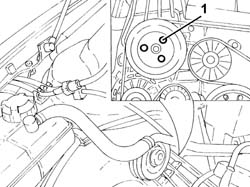
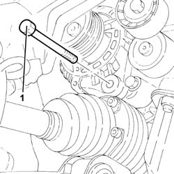
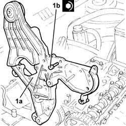

1008C18 LINK MOUNT ON ENGINE - R R
- Path
- Procedures > 10 ENGINE UNIT > 1008 POWER UNIT SUPPORTS > 1008C POWER UNIT REACTION ELEMENTS > 1008C18 LINK MOUNT ON ENGINE - R R
- Kind
- repair procedure (removal / refitting; the operation number is the code)
- Applies to
- engines: 1.8 T.SPARK; all production periods
- Interactive page
- https://sloeber94.github.io/elrnDB-aGt/en/#/125000887
Applies to: engines: 1.8 T.SPARK; all production periods
 Removing
Removing
 Refitting
RefittingPosition the vehicle on a lift.
Make sure that the ignition key is in the OFF position, then disconnect the negative battery terminal.
Description | Connector | |
|---|---|---|
- | Battery | A1B |
Proceed with the removal
Op. 4450B04 RIGHT FRONT WHEEL R R
Proceed with the removal
Op. 7055B66 ENGINE COMPARTMENT DUST SHIELD PROTECTION IN RIGHT FRONT WHEEL ARCH - R.R.
1. Disconnect the rapid connector (1a) for the fuel vapour recovery pipe and release it from the fastening (1b) on the power assisted steering fluid reservoir.

Applies to: engines: 1.8 T.SPARK; all production periods
Proceed with the removal
Op. 1016A40 IGNITION COIL COVER ON CYLINDER HEAD- R+R.
1. Undo the bolts (1a) and move the power assisted steering fluid reservoir (1b).

Applies to: engines: 1.8 T.SPARK; all production periods
1. Undo the bolts (1a) and release the power assisted steering fluid reservoir mounting bracket (1b) from the mounting on the engine for the reaction rod and various engine components.

Applies to: engines: 1.8 T.SPARK; all production periods
Proceed with the removal
Op. 1008C10 POWER UNIT UPPER REACTION LINK R R.
Proceed with the removal
5510C14 ROCCHETTI/BOBINE di accensione - S.R.
.
Proceed with the removal
Op. 1016A20 SINGLE CAM COVER - R + R AND REPLACE GASKET.
1. Loosen the bolts fixing the power assisted steering pump pulley.

Applies to: engines: 1.8 T.SPARK; all production periods
Proceed with the removal
Op. 1092G10 SINGLE ENGINE BELT R R.
Proceed with the removal
Op. 1092A10 CRANKSHAFT SERVICES PULLEY - R.R..
Proceed with the removal
Op. 1092G20 ENGINE COMPONENT SINGLE BELT FIXED TENSIONER - ONE - R + R.
Proceed with the removal
Op. 1032D12 TIMING SYSTEM PROTECTIVE COVER(S) - R + R.
Proceed with the removal
Op. 1032B10 TOOTHED TIMING BELT - R + R FOR TIMING ADJUSTMENT OR REPLACEMENT.
Proceed with the removal
Op. 1032C18 MOBILE TIMING SYSTEM TENSIONER - R + R FOR 24 VALVE ENGINES.
Proceed with the removal
Op. 1032C30 FIXED TIMING SYSTEM TENSIONER - R + R WITH TIMING BELT REMOVED.
1. Undo the bolt fixing the rear alternator mounting to the crankcase.
2. Undo the upper bolt (2a) securing the alternator and remove the rear alternator mounting bracket (2b).

Applies to: engines: 1.8 T.SPARK; all production periods
1. Undo the lower alternator fixing bolt.
Move the alternator from the support on the engine for the reaction rod and various engine components and secure it appropriately.

Applies to: engines: 1.8 T.SPARK; all production periods
1. Completely undo the bolts (1a) loosened previously and remove the power assisted steering pump drive pulley (1b).
2. Undo the bolts (2a) and move the power assisted steering pump (2b) without disconnecting the pipes.
3. Undo the bolt (3a) and remove the engine components single belt moving tensioner (3b).

Applies to: engines: 1.8 T.SPARK; all production periods
1. Undo the bolts (1a) and remove the mounting on the engine for the reaction rod and the various engine components (1b).

Applies to: engines: 1.8 T.SPARK; all production periods
Refitting
Removing1. Place the mounting on the engine for the reaction rod and the various engine components (1a) in its housing and secure it tightening the bolts (1b) to the recommended torque.
Fastening | Component | Ø | Value (daNm) | |
|---|---|---|---|---|
1b | Bolt | ENGINE LINK AND VARIOUS COMPT.MOUNTS | M8 | 2.3 ÷ 2.8 |
Fastening | Component | Ø | Value (daNm) | |
|---|---|---|---|---|
1b | Bolt | ENGINE LINK AND VARIOUS COMPT.MOUNTS | M8 | 4.5 ÷ 5.5 |

Applies to: engines: 1.8 T.SPARK; all production periods
1. Position the engine components single belt moving tensioner (1a) in its housing and secure it tightening the bolt (1b) to the recommended torque.
Fastening | Component | Ø | Value (daNm) | |
|---|---|---|---|---|
1b | Bolt | SINGLE BELT MOVING TENSIONER VARIOUS | M8 | 2.3 ÷ 2.8 |
2. Place the power steering pump (2a) complete with pipes in its housing and secure it by tightening the bolts (2b) to the recommended torque.
Fastening | Component | Ø | Value (daNm) | |
|---|---|---|---|---|
2b | Bolt | POWER STEERING PUMP | M8 | (Mount side) 2.3 - 2.8 |
3. Position the power assisted steering pump drive pulley (3a) in its housing and secure it using the bolts (3b) without tightening them.

Applies to: engines: 1.8 T.SPARK; all production periods
Place the alternator in its housing and secure it using the lower bolt without tightening it.
Place the alternator rear mounting bracket in its housing.
Tighten the alternator fixing bolts to the recommended torque.
Fastening | Component | Ø | Value (daNm) | |
|---|---|---|---|---|
- | Bolt | ALTERNATOR ASSEMBLY | M10 | 4.5 ÷ 5.5 |
Fastening | Component | Ø | Value (daNm) | |
|---|---|---|---|---|
- | Bolt | ALTERNATOR ASSEMBLY | M12 | 6.3 ÷ 7.7 |
Tighten the bolt fixing the rear alternator mounting to the crankcase.
Proceed with the refitting
Op. 1032C30 FIXED TIMING SYSTEM TENSIONER - R + R WITH TIMING BELT REMOVED.
Proceed with the refitting
Op. 1032C18 MOBILE TIMING SYSTEM TENSIONER - R + R FOR 24 VALVE ENGINES.
Proceed with the refitting
Op. 1032B10 TOOTHED TIMING BELT - R + R FOR TIMING ADJUSTMENT OR REPLACEMENT.
Proceed with the refitting
Op. 1032D12 TIMING SYSTEM PROTECTIVE COVER(S) - R + R.
Proceed with the refitting
Op. 1092G20 ENGINE COMPONENT SINGLE BELT FIXED TENSIONER - ONE - R + R.
Proceed with the refitting
Op. 1092A10 CRANKSHAFT SERVICES PULLEY - R.R..
Proceed with the refitting
Op. 1092G10 SINGLE ENGINE BELT R R.
Tighten the bolts securing the power steering pump drive pulley to the recommended torque.
Fastening | Component | Ø | Value (daNm) | |
|---|---|---|---|---|
- | Bolt | POWER STEERING PUMP DRIVE PULLEY | M8 | (Power assisted steering pump side) 2.3 - 2.8 |
Proceed with the refitting
Op. 1016A20 SINGLE CAM COVER - R + R AND REPLACE GASKET.
Proceed with the refitting
5510C14 ROCCHETTI/BOBINE di accensione - S.R.
.
Proceed with the refitting
Op. 1008C10 POWER UNIT UPPER REACTION LINK R R.
Place the power assisted steering fluid reservoir mounting bracket in its housing and secure it using the bolts.
Place the power assisted steering fluid reservoir in its housing and secure it using the bolts.
Proceed with the refitting
Op. 1016A40 IGNITION COIL COVER ON CYLINDER HEAD- R+R.
Connect the rapid connector for the fuel vapour recovery pipe and fasten it to the band on the power assisted steering fluid reservoir.
Proceed with the refitting
Op. 7055B66 ENGINE COMPARTMENT DUST SHIELD PROTECTION IN RIGHT FRONT WHEEL ARCH - R.R.
Proceed with the refitting
Op. 4450B04 RIGHT FRONT WHEEL R R
Connect the negative battery terminal (-).
Remove the vehicle from the lift.
Topics linked from this page (12)
- 1008C10 POWER UNIT UPPER REACTION LINK R R
- 1016A20 SINGLE CAM COVER - R + R AND REPLACE GASKET
- 1016A40 IGNITION COIL COVER ON CYLINDER HEAD- R+R
- 1032B10 TOOTHED TIMING BELT - R + R FOR TIMING ADJUSTMENT OR REPLACEMENT
- 1032C18 MOBILE TIMING SYSTEM TENSIONER - R + R FOR 24 VALVE ENGINES
- 1032C30 FIXED TIMING SYSTEM TENSIONER - R + R WITH TIMING BELT REMOVED
- 1032D12 TIMING SYSTEM PROTECTIVE COVER(S) - R + R
- 1092A10 CRANKSHAFT SERVICES PULLEY - R.R.
- 1092G10 SINGLE ENGINE BELT R R
- 1092G20 ENGINE COMPONENT SINGLE BELT FIXED TENSIONER - ONE - R + R
- 4450B04 RIGHT FRONT WHEEL R R
- 7055B66 ENGINE COMPARTMENT DUST SHIELD PROTECTION IN RIGHT FRONT WHEEL ARCH - R.R.